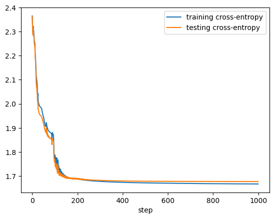

Day 8: From Micrograd to Pytorch and Starting COMPAS
Agenda
- 3:45-4:05pm: Instructor-led debrief of the homework… what just happened?!?
- 4:05-4:25pm: Cross-entropy loss
- 4:25-5:15pm: From micrograd to Pytorch
- 5:15-5:25pm: Preview of what’s to come
Instructor-led Debrief
We’ll debrief on what happened in the previous assignment. The focus will be on connecting mathematical concepts to Python. We hope that by the end of this everything is coming into focus for you (it may take a little longer to fully click).
Here’s a recorded version of this walkthrough.
Cross Entropy and the Log Loss
On assignment 9, you will generate graphs that show the cross entropy of a model to classify handwritten digits. These graphs will look something like this.

The cross entropy on the handwritten digit classification task. The x-axis refers to the number of gradient descent steps.
Right now we are going to help you interpret what these graphs mean. The y-axis is cross entropy, which for now we can simply understand as a measure of the model’s loss when its predictions are compared to the actual classes of the digits in either the training (blue line) or the test set (orange line). The x-axis of this graph should be fairly easy to interpret. The axis is labeled step, which refers to how many gradient descent steps have been taken by your optimizer in order to drive down the loss.
In order to interpret these graphs we are going to need two ingredients. First, we need to understand how a classifier, in response to a given input, can assign a probability of that input being a member of each of $k$ possible classes (notice how this contrasts with the binary classification case where we had to assign a single probability of the input being a $1$). Second, we need a way to assign a loss value (cross entropy in this case) given a set of predicted probabilities and the actual class label of the digit.
Assigning probabilities when there are more than 2 classes
Recalling binary logistic regression, we needed a way to assign a probability to the class being 1. To do this, we passed our weighted sum of features, $s$, through the sigmoid function $\sigma(s) = \frac{1}{1+e^{-s}}$. In the multi-class case (again, where we have $k$ classes), we assume that we have computed a weighted sum of features for each of these k classes $s_1, s_2, \ldots, s_k$. We now calculate the probability of each particular class using the following formula called the softmax function.
\[\begin{aligned} p(y = i) = \frac{e^{s_i}}{\sum_{j=1}^{k} e^{s_j}} \end{aligned}\]Here are some exercises to help you think through this.
- Probabilities should always be non-negative and less than or equal to 1. Additionally, a set of probabilities that forms a probability distribution should add up to 1. Show that both of these conditions are satisfied for the softmax function.
- Think about some limiting cases, what happens to the probability for class $i$ when $s_i$ gets really big? What about when it becomes very negative?
- Consider the case where $k=2$ and $s_1 = 0$. How does this relate to the sigmoid function we learned about for log loss?
Calculating cross entropy
Now that we have a way to calculate probabilities, we need to figure out how to assign a loss to any particular
prediction. The loss function we’re going to use here is called cross entropy and we’ll use the notation $ce$ to
refer to it. Let’s use the shorthand $\hat{y}_i$ to be $p(y=i)$ (as defined, for example, by the softmax formula).
We can now think of $\mathbf{\hat{y}}$ as a vector of all of these probabilties.
The following exercise will take you through some important takeaways.
- Make sure you understand the role of the indicator function $\mathbb{I}$, what is it doing to the terms in the summation?
- The formula for log loss for binary classification is $\ell(\hat{y}, y) = -y \log(\hat{y}) - (1-y)\log(1-\hat{y})$. Show that this formula is essentially the same as cross entropy when $k=2$.
- Imagine that at the beginning of the learning process the digit classifier assigns equal probability to each digit (0-9) regardless of what the actual class is (i.e., the model hasn’t learned anything yet). What do you think the model’s cross entropy should be in this case?
From Micrograd to Pytorch
While it may be tempting to ride our micrograd framework for the rest of the semester, you can probably tell that there are some good reasons to move to something a little more powerful. We’re going to be using the pytorch framework for the remainder of the scaffolded work in this course (it’s possible you might venture into a different framework for the final project). Machine learning frameworks like pytorch provide some really important capabilities for us.
- An autograd engine
- Built-in optimizers (that do, for example, gradient descent)
- Optimized code that can efficiently handle large models (e.g., by running on a GPU or across several GPUs)
- Specific building blocks for machine learning algorithms that are used by current state of the art algorithms.
- The ability to be extended easily when the library doesn’t provide the necessary functionality.
To help introduce pytorch, we’re going to jump right into a looking at some pytorch code. This is a great chance to practice reading code and looking up documentation. Your goal should be to understand the given code as well as possible. If there are pieces that you can’t figure out, please ask us or make a note of your confusion so you can revisit it later. You’ll also get a head start on the assignment (so that is a bonus!).
The code in question is in the assignment 9, part 2 Colab notebook. The first two code cells load a dataset of handwritten digits and visualize them. The third code cell is where the action is, we’d like you to go over that one, read documentation, ask ChatGPT, ask an instructor, etc., so that you leave here today with a solid understanding of a training / testing loop in pytorch.
Note: we’re doing things a bit out of sequence in that the assignment linked above is not actually due until next Thursday. You are getting a head start!
More Resources on Pytorch
We’re going to be introducing Pytorch functionality on an as needed basis, but if you’d like to get some more practice with the basics, we recommend checking out some of the Pytorch tutorials. Start with the basics of using Tensors.
Preview of Where We Are Going
- As part of the next assignment, you’ll be doing your first quality-assessed deliverable. The deliverable will be open-Internet, specific ground rules for use of GenAI (see assignment), and must be done individually. The assignment will cover concepts of model evaluation and metrics.
- Next class, we’ll be discussing the COMPAS algorithm for recidivism prediction, which is a famous case study on bias in machine learning systems. The topics discussed are quite sensitive, and we ask that you approach the readings and class discussion with an open mind (see this section of the next assignment for some specifics on this). On Monday, Paul will provide some discussion guidelines to help guide class time.